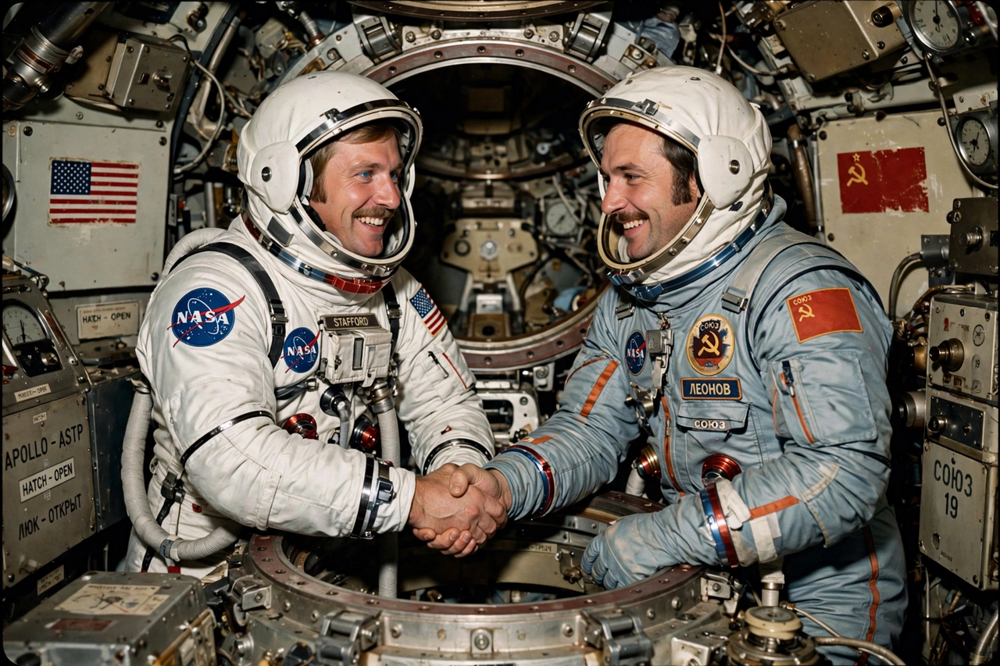

Apollo–Soyuz Test Project
From Wikipedia, the free encyclopedia
| Apollo–Soyuz Test Project | |
|---|---|
| Crew | Stafford, Brand, Slayton / Leonov, Kubasov |
| Launch | 15 July 1975 |
| Docking | 17 July 1975 |
| Significance | First joint US–Soviet crewed mission |

The famous handshake in orbit, July 1975.The Apollo–Soyuz Test Project (ASTP) was the first joint United States–Soviet crewed space mission, flown in July 1975. An American Apollo capsule and a Soviet Soyuz docked in Earth orbit on 17 July, and their crews — Thomas Stafford, Vance Brand and Deke Slayton for the US; Alexei Leonov and Valeri Kubasov for the USSR — shook hands through the open hatch in a televised symbol of détente.
Because the two craft had incompatible atmospheres and docking systems, a special docking module was built to serve as airlock and adapter. The crews trained together for two years, learning each other's languages — Stafford's Russian and Leonov's English became part of the mission's folklore, and the two commanders remained lifelong friends.
Last Apollo
The mission was the final flight of Apollo hardware and the last American crewed launch until the Space Shuttle in 1981. Its end was marred by a mishap: during descent the Apollo crew accidentally allowed toxic nitrogen tetroxide fumes into the cabin, and all three were hospitalised after splashdown — a scare that closed the programme quietly.
ASTP proved the concept of international rescue compatibility and joint docking standards, a direct ancestor of the Shuttle–Mir program and the International Space Station.
See also
Alexei Leonov · Soyuz (spacecraft) · Shuttle–Mir program · Apollo program · Mercury Seven